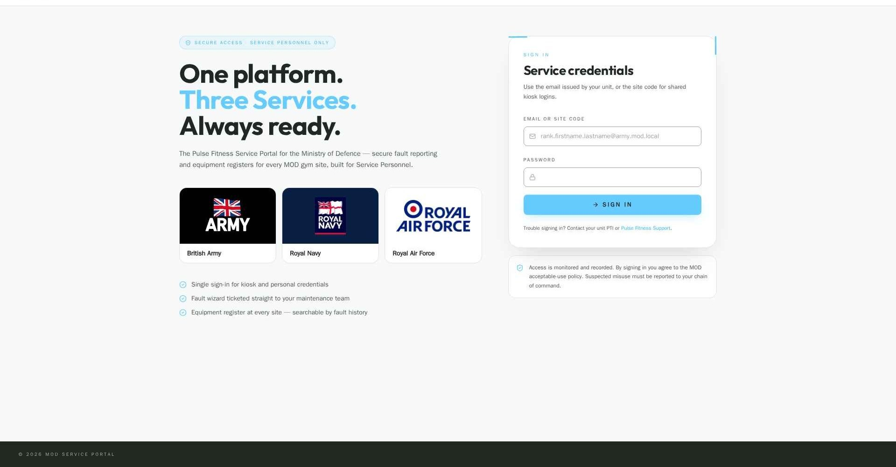
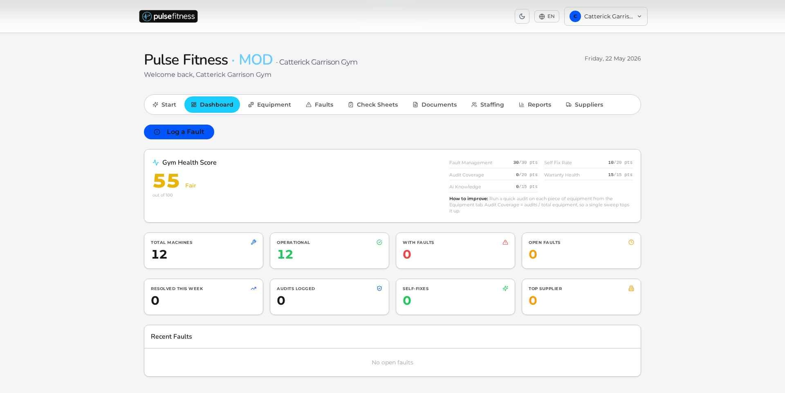
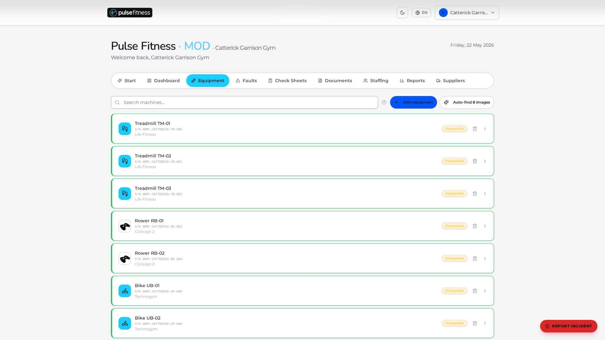
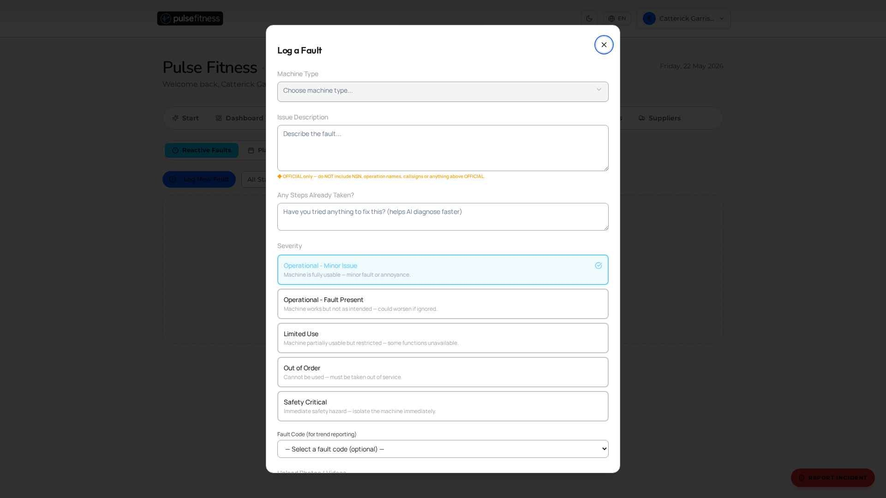
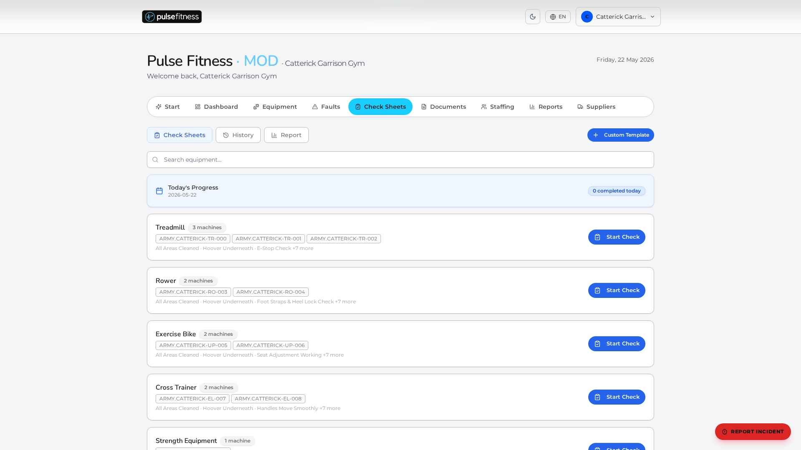
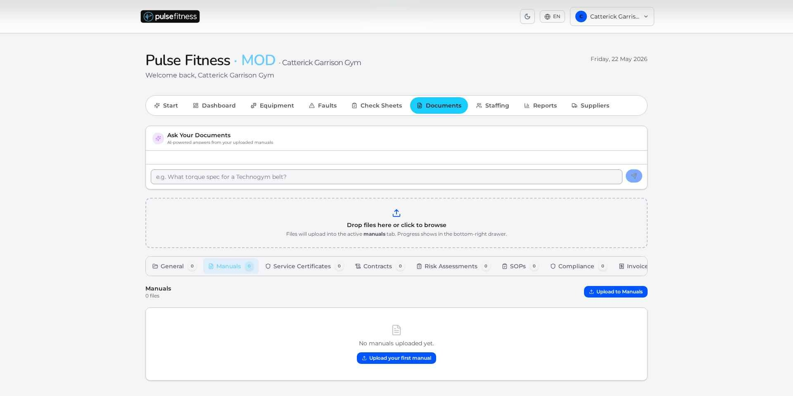
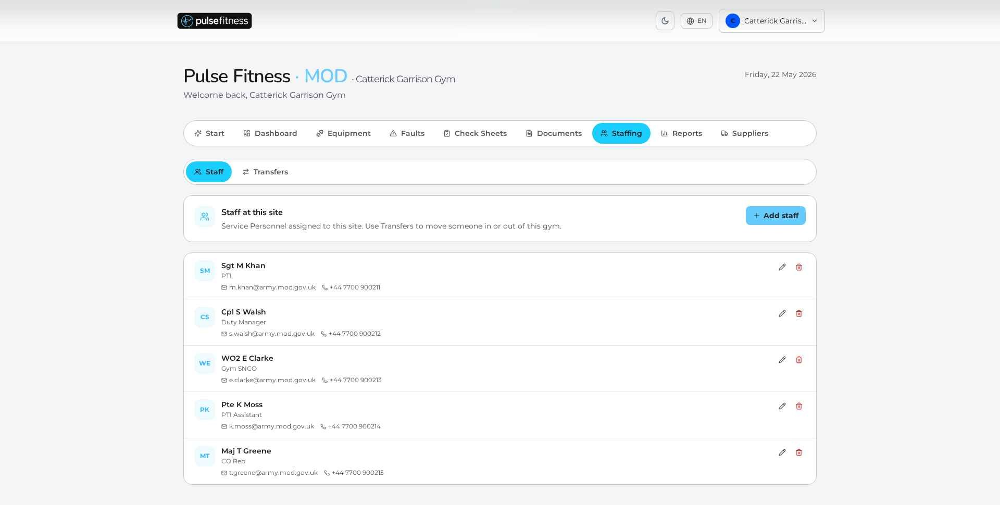
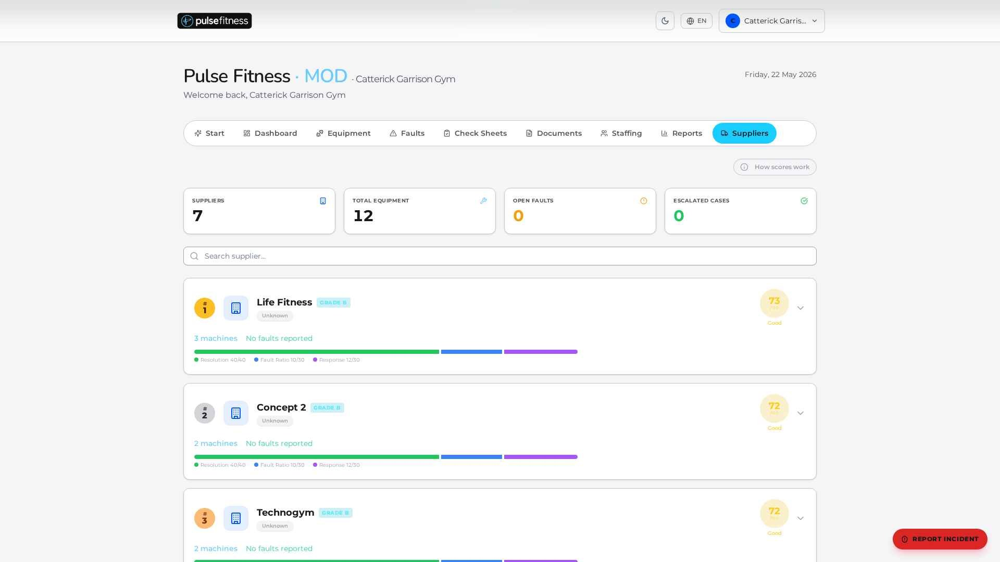
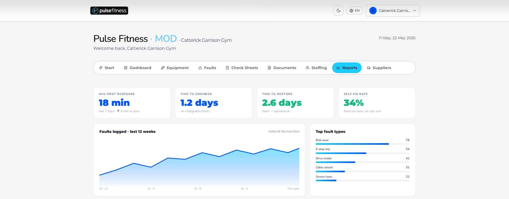

A single operations platform for the UK Armed Forces' physical training estate — built to keep every machine, every base, every audit ready for inspection, deployment, and duty of care.
Every base has a gym. Every gym has expensive kit. But the systems used to keep that kit safe — and to prove it's safe in an audit — haven't kept up with the rest of the estate.
GymAxis MOD is a purpose-built operations platform for the UK Armed Forces. It gives DIO, Estates HQ, branch commands and on-base PTIs one shared system of record for every piece of kit, every fault, every check-sheet, every audit — across the entire defence estate.
MOD users never touch the commercial sign-in. They land on a hardened portal that supports two ways in: a shared site login (one login per gym for the duty team) and personal logins for branch and estate HQ staff with two-factor security.
Branch & estate HQ users must enrol a two-factor code on first login. Passwords rotate every 90 days. Five wrong attempts locks the account.
Site (gym-floor view), branch (RAF / Army / Navy oversight), and estate HQ (whole-of-defence). Each role sees only what it needs.
MOD users can't see commercial customers and vice-versa. Every request is checked against the user's permitted base & branch — on every click.


One screen, every base. Each gym appears as a card with a single health score. Click a card to drill into a branch, then a site, then a machine — in three clicks you're on a treadmill.
A single 0–100 number combining how well faults are managed, how often kit is checked, what's covered by warranty, and how much is fixed on-base.
RAF Brize Norton vs Catterick Garrison vs HMS Raleigh — exact same metrics, exact same chart. No more apples-to-oranges.
How long it took to acknowledge a fault, get an engineer on site, and get the machine running — every step timestamped.
See, at a glance, how much kit is approaching end-of-life across the whole estate — so refurb vs replace decisions are evidence-led.
Every machine has its own record — serial number, make, model, when it was bought, when the warranty runs out, what service contract it sits under, and every fault it has ever had. Serial numbers use the MOD's own naming convention (ARMY.CATTERICK-TR-000), so existing estates records reconcile on day one.


Every text box shows a constant reminder: "OFFICIAL only — please don't include NSNs, operation names, callsigns or anything higher than OFFICIAL." The platform also scans for classified patterns automatically and flags HQ for a quick review.
Every machine comes with a configurable daily checklist — by default, an MOD-tuned template (emergency-stop test, hoover underneath, foot-strap inspection, fluid levels, cable wear). PTIs run them on a tablet during the morning shift. HQ sees coverage as a live percentage.
Templates line up with the MOD's own Health & Safety manual — duty-of-care evidence is built in.
A dedicated incident wizard captures injury reports with photo, witness, and timestamp — ready for HSE if needed.
Your existing Service Department risk assessment lives inside the platform, reviewed annually with reminders.
Checks missed for over 48 hours nudge the duty manager; over 7 days, branch HQ is alerted automatically.


Risk assessments, service contracts, RIDDOR reports, manufacturer spec sheets — versioned, searchable, and pinned to the right machine.

PTIs, duty managers, CO reps — with rank, role, posting-out wizard, and successor handover. Auto-archives on the leave date.

A–F grade per supplier — graded on resolution rate, response time, and fault ratio. Procurement gets the truth, not the sales pitch.

How long it takes to acknowledge a fault, get an engineer on site, and get the machine running — sliced by site, branch, and Service.
Fault volumes, the faults that keep coming back, downtime hours, machines out of service — for OC PT and base SHEF briefings.
A live library of risk assessments by Service and by site, with annual review reminders and version history.
Replacement costs forecast from manufacturer pricing, with refurbish-vs-replace recommendations on every machine.
Emailed every Monday at 07:00 to OC PT and HQ contacts — a one-page picture of the week ahead.
Branch & estate HQ accounts must enrol a two-factor code on first login. Short-lived sessions, single-use backup codes, and admins can't turn off their own two-factor.
Every request is checked against the user's permitted base and branch. MOD data never crosses branch lines and is never mixed with the commercial customer base.
Every text field is scanned automatically for NSNs, callsigns, and operation names. Any hit pauses the submission and notifies HQ for a quick review.
Data is encrypted while travelling between you and us, and again at rest inside our database. Industry-standard ciphers (TLS 1.3, AES-256), with keys held in hardware-backed custody.
MOD HQ accounts are prompted to change their password every 90 days. Five wrong attempts locks the account. Passwords are stored as one-way hashes — even we can't read them.
Every fault carries a full history — logged, escalated, assigned, fixed, closed — with a timestamp and the user who did it. Nothing can be edited after the event.
All MOD tenant data lives in UK data centres. We support full right-to-erasure for posted-out personnel. Compliant with UK GDPR and the Data Protection Act 2018.
Over 600 automated tests run before every release, plus a daily check that the live platform is healthy. If something breaks, we know before you do.
A UK-government-approved firm tries to break in once a year. Findings are fixed within 30 days and the full report is shared with your security team.
| Framework / Standard | Status | How GymAxis MOD addresses it |
|---|---|---|
| JSP 375 Vol 3 Ch 5 MOD H&S management |
✓ Aligned | Check-sheet templates, RA library, RIDDOR workflow, evidence retention, escalation chain all mapped to JSP 375. |
| JSP 440 Defence Manual of Security |
✓ Aligned | OFFICIAL-only classification guard, MFA on HQ, audit trail, encrypted transport + at rest, UK hosting. |
| HSE / RIDDOR UK reporting of injuries |
✓ Workflow | Dedicated incident wizard — photo, witness, RIDDOR-trigger flag, automatic notification to base SHEF rep. |
| PUWER 1998 Provision & use of work equipment |
✓ Workflow | Inspection cadence enforced via PPM, fault history retained, isolated-from-use flag for unsafe kit. |
| NCSC Cloud Security Principles | ✓ Aligned | All 14 principles addressed in the SaaS deployment doc — happy to share under NDA at procurement stage. |
| UK GDPR / DPA 2018 | ✓ Compliant | DPA & DPIA templates prepared, UK-only hosting, right-to-erasure workflow for posted-out personnel. |
| ISO 27001 | In-flight | Pre-cert audit complete; full certification on track for Q4 2026. ISMS already operating against controls. |
| Cyber Essentials Plus | ✓ Held | Annual renewal; audit certificate available on request. |
DPA / DPIA signed, branches identified, DIO contact set, kick-off workshop with Estates HQ.
One site per service (RAF Brize Norton, Catterick Garrison, HMS Raleigh). Live faults, live check-sheets, real PTI users.
Existing asset registers imported via CSV. PTI champions per branch trained as in-base super-users.
RAF / Army / Navy estates onboarded in parallel waves. Daily standups with branch leads.
DIO sign-off, full estate KPI dashboard live, first quarterly business review scheduled.
One annual licence per site, banded by size, with a flat fee for HQ rollup access. All integrations, support, training, and on-base rollout included — no per-user uplift, no hidden fees. Volume tiers built around multi-base estate commitments.
Indicative pricing at the second meeting under NDA. Full commercials delivered against an MOD scope statement, aligned with G-Cloud frameworks where the contract demands it.
Equipment, fault codes, severity tiers, supplier grading, PPM cadence — modelled for fitness kit, not retrofitted from a CAFM.
British company. UK-only data centres. UK-based delivery and support team. No offshoring of MOD data, ever.
Live with commercial multi-site operators (Third Space, Pulse Fitness estate). MOD-tier features battle-tested in dev against Catterick Garrison demo data.
DIO & PT branch leads sit on the GymAxis MOD steering group — your priorities become next quarter's roadmap.
Your data is yours. Full CSV / JSON export of every asset, fault, check-sheet, and document — no lock-in tax. Always.
624-test regression suite, zero-warning lint gate, post-deploy smoke checks, weekly lint-health digest — engineering discipline you can audit.
We'd welcome a 60-minute working session with the DIO team and a nominated branch lead to walk through a live MOD tenant, demo the fault flow on a real base, and scope a 3-site pilot.
60 mins · DIO team + branch lead
Live MOD tenant walkthrough.
DPA & DPIA pack
NCSC cloud principles mapped.
One per service · 90 days
Commercial terms post-pilot.